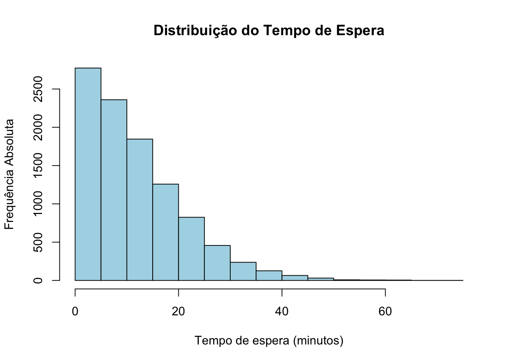

Capítulo 50 Simulação
A simulação é uma ferramenta poderosa que utiliza a capacidade dos computadores modernos para realizar cálculos que, de outra forma, seriam difíceis ou até impossíveis de serem resolvidos analiticamente. A Lei dos Grandes Números assegura-nos que, ao observarmos uma grande amostra de variáveis aleatórias independentes e identicamente distribuídas (i.i.d.) com média finita, a média dessas observações tende a convergir para a média verdadeira da distribuição à medida que o tamanho da amostra aumenta.
Em vez de nos esforçarmos para encontrar essa média através de métodos analíticos complexos, podemos utilizar o poder computacional para gerar uma amostra suficientemente grande dessas variáveis aleatórias. A partir dessa amostra, calculamos a média observada, que serve como uma estimativa consistente da média verdadeira da distribuição. No entanto, a eficácia desse método depende de três fatores cruciais:
- Identificação correta dos tipos de variáveis aleatórias necessárias para o problema em questão: É essencial determinar quais distribuições de probabilidade descrevem adequadamente os processos aleatórios que estamos a modelar.
- Capacidade do computador de gerar essas variáveis de forma precisa: Os algoritmos utilizados para gerar números pseudoaleatórios devem ser robustos e capazes de produzir amostras que representem fielmente as distribuições desejadas.
- Determinação do tamanho adequado da amostra: O tamanho da amostra deve ser suficientemente grande para que a média da amostra seja uma boa aproximação da média real. Além disso, um tamanho de amostra maior geralmente reduz a variabilidade das estimativas, aumentando a fiabilidade dos resultados.
A simulação, portanto, simplifica o processo de resolução de problemas complexos, proporcionando uma abordagem prática e eficiente para explorar cenários onde o cálculo analítico é impraticável ou impossível. Ela permite aos estatísticos e cientistas de dados testar hipóteses, realizar análises de sensibilidade e prever resultados em condições controladas de incerteza.
Para ilustrar o potencial da simulação, começamos com alguns exemplos básicos onde a solução analítica já é conhecida. Esses exemplos demonstram que a simulação pode reproduzir resultados teóricos com precisão. Além disso, estes casos introdutórios servem para destacar aspetos importantes que precisam ser considerados ao resolver problemas mais complexos por meio de simulação, como o tratamento de variáveis dependentes, correlações entre variáveis, e questões de eficiência computacional.
Exemplo 1 (Estimando a Média de uma Distribuição Uniforme): A média da distribuição uniforme no intervalo \([0,1]\) é conhecida por ser \(\frac{1}{2}\). Se tivermos um grande número de variáveis aleatórias independentes e identicamente distribuídas (i.i.d.) a partir dessa distribuição uniforme, denotadas por \(X_{1}, X_{2}, \ldots, X_{n}\), a Lei dos Grandes Números diz-nos que a média amostral, dada por \(\overline{X} = \frac{1}{n} \sum_{i=1}^{n} X_{i}\), deve aproximar-se da média verdadeira de 0.5 à medida que o tamanho da amostra \(n\) aumenta.
A tabela abaixo apresenta as médias de diferentes amostras simuladas de tamanho \(n\) geradas a partir da distribuição uniforme \([0,1]\) para vários valores de \(n\). Observamos que as médias amostrais estão geralmente próximas de 0.5, mas existe uma considerável variação, especialmente quando \(n = 100\). Nota-se que há menos variação para \(n = 1.000\), e a variação diminui ainda mais para os dois maiores valores de \(n\) (10.000 e 100.000).
| n | Replicações da Simulação | ||||
|---|---|---|---|---|---|
| 100 | 0.485 | 0.481 | 0.484 | 0.569 | 0.441 |
| 1.000 | 0.497 | 0.506 | 0.480 | 0.498 | 0.499 |
| 10.000 | 0.502 | 0.501 | 0.499 | 0.498 | 0.498 |
| 100.000 | 0.502 | 0.499 | 0.500 | 0.498 | 0.499 |
Para gerar uma amostra aleatória uniforme no intervalo [0,1], utilizamos
a função runif no R:
Como discutido anteriormente, neste exemplo não há necessidade real de simulação, pois conhecemos a média da distribuição uniforme analiticamente. Este exemplo serve para ilustrar que a simulação pode replicar resultados teóricos. No entanto, é crucial entender que, independentemente do tamanho da amostra gerada, a média amostral de variáveis aleatórias i.i.d. não será necessariamente exatamente igual à média verdadeira da distribuição. A simulação introduz uma variabilidade que precisa ser considerada; à medida que o tamanho da amostra aumenta, a variabilidade da média amostral diminui, aproximando-a da média real. Esta propriedade sublinha a importância de escolher um tamanho de amostra apropriado para obter estimativas confiáveis.
Exemplo de Aplicação da Simulação
A seguir, exploramos um exemplo onde as questões fundamentais são relativamente fáceis de descrever, mas a solução analítica seria, na melhor das hipóteses, complexa e trabalhosa.
Problema: Esperando por uma Pausa. Dois atendentes, A e B, num restaurante fast-food começam a servir clientes ao mesmo tempo. Eles concordam em encontrar-se para uma pausa assim que ambos tiverem atendido 10 clientes. No entanto, um deles provavelmente terminará antes do outro e terá de esperar. O nosso objetivo é determinar, em média, quanto tempo um dos atendentes terá de esperar pelo outro.
Para modelar este problema, assumimos que os tempos de serviço de cada cliente, independentemente do atendente, são variáveis aleatórias independentes e identicamente distribuídas (i.i.d.) com uma distribuição exponencial de taxa \(\lambda = 0.3\) clientes por minuto. Portanto, o tempo total que um atendente leva para atender 10 clientes segue uma distribuição gama com parâmetros de forma \(k = 10\) e taxa \(\lambda = 0.3\).
Seja \(X\) o tempo que o atendente A leva para atender 10 clientes e Y o tempo que o atendente B leva para atender 10 clientes. Precisamos de calcular a média do valor absoluto da diferença de tempo entre eles, \(E(|X - Y|)\).
A solução analítica para este problema exigiria a resolução de uma integral dupla sobre a união de duas regiões não retangulares. Em vez disso, a simulação oferece uma abordagem mais prática e eficiente.
Solução Usando Simulação
Suponhamos que podemos gerar um grande número de variáveis aleatórias gama independentes. Podemos, então, simular um par \((X, Y)\) e calcular \(Z = |X - Y|\). Repetindo este processo independentemente várias vezes, podemos calcular a média de todos os valores observados de \(Z\), que servirá como uma estimativa da média de \(|X - Y|\).
Vamos utilizar o R para realizar a simulação:
# Definir a semente para reprodutibilidade
set.seed(123)
# Gerar amostras da distribuição gama para X e Y
x <- rgamma(10000, shape = 10, rate = 0.3)
y <- rgamma(10000, shape = 10, rate = 0.3)
# Calcular a diferença absoluta entre X e Y
z <- abs(x-y)
# Calcular a média de Z
mean(z)## [1] 11.75882A saída do código acima dá-nos um tempo médio de espera de aproximadamente 11.75 minutos.
Para compreender melhor a distribuição do tempo de espera, podemos visualizar a distribuição dos valores de \(Z\) utilizando um histograma:
hist(z,
main = "Distribuição do Tempo de Espera",
xlab = "Tempo de espera (minutos)",
ylab = "Frequência Absoluta",
col = "lightblue",
border = "black")
50.1 Simulação e Geração de Números Pseudoaleatórios
Números Aleatórios
Números aleatórios são valores gerados de forma imprevisível, sem seguir nenhum padrão determinístico. Numa sequência de números aleatórios, cada número é escolhido independentemente dos outros, e não há qualquer correlação entre eles. Na prática, números aleatórios são fundamentais em diversas áreas, como criptografia, simulações estatísticas, jogos de azar e processos de modelagem onde a imprevisibilidade é crucial.
A verdadeira aleatoriedade geralmente deriva de processos físicos inerentemente imprevisíveis, como a radiação cósmica, o ruído térmico em circuitos eletrónicos ou o decaimento radioativo. No entanto, em computação, obter números verdadeiramente aleatórios pode ser difícil e, frequentemente, desnecessário. Para muitas aplicações, uma forma de aleatoriedade que seja suficientemente imprevisível é suficiente.
Números Pseudoaleatórios
Números pseudoaleatórios, por outro lado, são gerados por algoritmos determinísticos que produzem sequências de números que parecem aleatórios, mas são, na verdade, baseados num valor inicial conhecido como semente (seed). Se um algoritmo de geração de números pseudoaleatórios for iniciado com a mesma semente, ele produzirá exatamente exatamente a mesma sequência de números em cada execução.
Embora os números pseudoaleatórios não sejam verdadeiramente aleatórios, são amplamente utilizados porque podem ser gerados de forma rápida e eficiente e, para muitas aplicações, são suficientemente aleatórios. A principal vantagem de usar números pseudoaleatórios é que, ao utilizar a mesma semente, podemos replicar experiências ou simulações, o que é extremamente útil para fins de investigação e depuração de códigos.
Método Congruencial Multiplicativo
Uma das abordagens mais comuns para gerar números pseudoaleatórios é o Método Congruencial Multiplicativo:
- Semente Inicial: Considere um valor inicial \(x_0\), chamado de semente (seed).
- Cálculo Recursivo: Para \(n \geq 1\) , os valores sucessivos \(x_n\) são calculados recursivamente usando a fórmula:
\[x_n = (a \cdot x_{n-1}) \, \text{mod} \, m,\]
onde \(a\) e \(m\) são inteiros positivos dados. Aqui, \(x_n\) é o resto da divisão inteira de \(a \cdot x_{n-1}\) por \(m\).
- Números Pseudoaleatórios: A quantidade \(\frac{x_n}{m}\) é considerada um número pseudoaleatório, uma aproximação de uma variável aleatória uniforme no intervalo \([0,1]\).
Critérios para Escolha de \(a\) e \(m\)
Para que os números gerados sejam úteis em simulações, as constantes \(a\) e \(m\) devem satisfazer os seguintes critérios:
- Aparência de Aleatoriedade: A sequência gerada deve ter a “aparência” de uma sequência de variáveis aleatórias uniformemente distribuídas no intervalo (0,1).
- Período Longo: A sequência deve ter um período longo antes de começar a se repetir, o que significa que deve gerar um grande número de variáveis antes que ocorra uma repetição.
- Eficiência Computacional: Os valores devem ser computados de forma eficiente para que o algoritmo seja utilizável em aplicações práticas.
Para ver como o algoritmo funciona, considere-se o seguinte exemplo, arbitrando-se \(m=17\), \(a=5\) e \(x_0=7\):
- \(x_1 = (5\times 7) \, mod \, 17\) = resto da divisão inteira de 35/17=1
- \(x_2 = (5 \times 1)\, mod \, 17= 5\)
- \(x_3 = (5 \times 5)\, mod \, 17= 8\)
Continuando o processo, obtém-se:
\[7, 1, 5, 8, 6, 13, 14, 2, 10, 16, 12, 9, 11, 4, 3, 15, (R) 7, 1, 5, 8,\ldots\] Após R, verifica-se repetição, pelo que o período foi de 16 números.
50.2 A função set.seed()
A função set.seed() no R é usada para definir uma semente para o gerador de números aleatórios. Isso significa que, ao usar set.seed() com um valor específico, podemos garantir que os resultados de operações aleatórias serão reprodutíveis. Em outras palavras, sempre que executarmos o código com o mesmo valor de semente, os mesmos números aleatórios serão gerados.
A aleatoriedade em R (como em outros softwares estatísticos) é gerada por algoritmos, e a “semente” inicial determina a sequência de números aleatórios que serão produzidos. Ao definir uma semente com set.seed(), controlamos o ponto de partida dessa sequência, garantindo que as operações subsequentes que dependem de aleatoriedade sempre retornem os mesmos resultados quando a semente é a mesma.
## [1] 31 79 51 14 67Com isso, você sempre obterá os mesmos 5 números aleatórios ao usar esse código.
O gerador de números pseudoaleatórios padrão em R é o Mersenne Twister. No R, o Mersenne Twister usa uma semente aleatória como entrada: construída a partir do tempo e ID da sessão. Você pode substituir a semente aleatória por uma semente fixa com a função set.seed().
50.3 Exercícios
1. Defina uma semente de sua escolha usando set.seed().
- Gere duas amostras aleatórias de tamanho 10 a partir dos números de 1 a 50, sem reposição.
- Mude o valor da semente e gere novamente as amostras.
- Compare os resultados obtidos antes e depois de alterar a semente.
2. Defina uma semente fixa usando set.seed(123).
- Simule 100 lançamentos de um dado (números de 1 a 6) e conte a frequência de cada número.
- Repita o processo sem redefinir a semente.
- Redefina a semente com o mesmo valor (
set.seed(123)) e repita a simulação. Compare os resultados com a primeira simulação.
3. Use set.seed() para gerar 50 valores aleatórios de uma distribuição normal (\(N(\mu=10, \sigma=2)\)). Use rnorm(n = 50, mean = 10, sd = 2).
- Use a mesma semente para gerar 50 valores de uma distribuição uniforme (\(U(0, 1)\)). Use
runif(n = 50, min = 0, max = 1). - Altere a semente e repita o processo. Compare os conjuntos de dados gerados.
4. Defina uma semente usando set.seed(42).
- Divida os números de 1 a 100 em dois grupos aleatórios de tamanho igual (50 números cada). Use a função
setdiff()para dividir os grupos. - Execute novamente a divisão sem usar
set.seed(). - Redefina a semente como
set.seed(42)e repita a divisão. Verifique se os grupos permanecem os mesmos.
5. Use set.seed() para simular as respostas de 50 participantes a uma pergunta de múltipla escolha com 4 opções (A, B, C, D).
- Altere a semente e repita a simulação.
- Verifique se as distribuições das respostas mudam ao alterar ou manter a mesma semente.